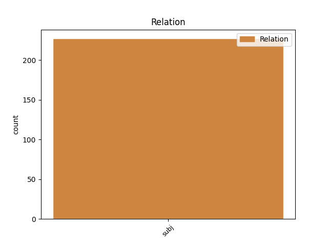
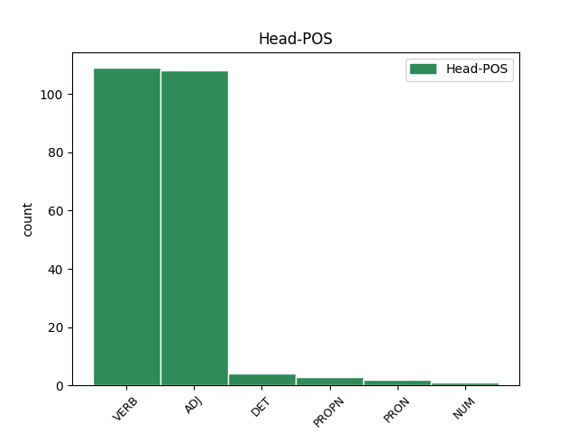
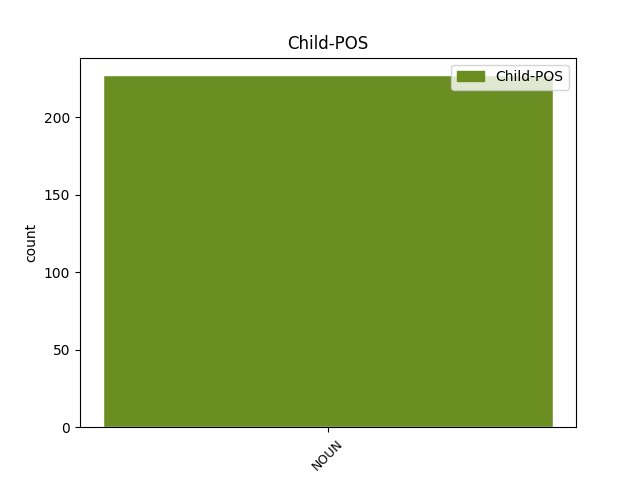

Distribution of features within this leaf



Agreement Rules sorted by frequency.
- When the dependent token is the subject(subj) of the head token, and the head token is ADJ and the dependent token is NOUN.
1 Šengeno _ _ _ _ 0 _ _ _
2 duomenų _ _ _ _ 0 _ _ _
3 apsaugos _ _ _ _ 0 _ _ _
4 vertinimo _ _ _ _ 0 _ _ _
5 ataskaitoje _ _ _ _ 0 _ _ _
6 pažymėta _ _ _ _ 0 _ _ _
7 , _ _ _ _ 0 _ _ _
8 kad _ _ _ _ 0 _ _ _
9 duomenų _ _ _ _ 0 _ _ _
10 apsauga _ _ _ _ 0 _ _ _
11 Lietuvoje _ _ _ _ 0 _ _ _
12 yra _ _ _ _ 0 _ _ _
13 tinkama _ _ _ _ 0 _ _ _
14 ir _ _ _ _ 0 _ _ _
15 visiškai _ _ _ _ 0 _ _ _
16 atitinka _ _ _ _ 0 _ _ _
17 Šengeno _ _ _ _ 0 _ _ _
18 teisyną _ _ _ _ 0 _ _ _
19 , _ _ _ _ 0 _ _ _
20 išskyrus _ _ _ _ 0 _ _ _
21 tai _ _ _ _ 0 _ _ _
22 , _ _ _ _ 0 _ _ _
23 kad _ _ _ _ 0 _ _ _
24 Inspekcija inspekcija NOUN dkt.mot.vns.V. Case=Nom|Gender=Fem|Number=Sing 33 subj _ _
25 dėl _ _ _ _ 0 _ _ _
26 kasmetinio _ _ _ _ 0 _ _ _
27 jos _ _ _ _ 0 _ _ _
28 vadovo _ _ _ _ 0 _ _ _
29 veiklos _ _ _ _ 0 _ _ _
30 vertinimo _ _ _ _ 0 _ _ _
31 nėra _ _ _ _ 0 _ _ _
32 visiškai _ _ _ _ 0 _ _ _
33 nepriklausoma nepriklausomas ADJ bdv.nelygin.mot.vns.V. Case=Nom|Definite=Ind|Degree=Pos|Gender=Fem|Number=Sing 0 _ _ _
34 . _ _ _ _ 0 _ _ _
1 Per _ _ _ _ 0 _ _ _
2 2006 _ _ _ _ 0 _ _ _
3 m _ _ _ _ 0 _ _ _
4 . _ _ _ _ 0 _ _ _
5 buvo _ _ _ _ 0 _ _ _
6 gauti gauti VERB vksm.dlv.neveik.būt.vyr.dgs.V. Case=Nom|Definite=Ind|Gender=Masc|Number=Plur|Polarity=Pos|Tense=Past|VerbForm=Part|Voice=Pass 0 _ _ _
7 ir _ _ _ _ 0 _ _ _
8 patenkinti _ _ _ _ 0 _ _ _
9 du _ _ _ _ 0 _ _ _
10 duomenų _ _ _ _ 0 _ _ _
11 subjektų _ _ _ _ 0 _ _ _
12 prašymai prašymas NOUN dkt.vyr.dgs.V. Case=Nom|Gender=Masc|Number=Plur 6 subj _ _
13 surinkti _ _ _ _ 0 _ _ _
14 jų _ _ _ _ 0 _ _ _
15 asmens _ _ _ _ 0 _ _ _
16 duomenis _ _ _ _ 0 _ _ _
17 ar _ _ _ _ 0 _ _ _
18 informaciją _ _ _ _ 0 _ _ _
19 apie _ _ _ _ 0 _ _ _
20 jų _ _ _ _ 0 _ _ _
21 asmens _ _ _ _ 0 _ _ _
22 duomenų _ _ _ _ 0 _ _ _
23 tvarkymą _ _ _ _ 0 _ _ _
24 iš _ _ _ _ 0 _ _ _
25 dvylikos _ _ _ _ 0 _ _ _
26 registruotų _ _ _ _ 0 _ _ _
27 duomenų _ _ _ _ 0 _ _ _
28 valdytojų _ _ _ _ 0 _ _ _
29 . _ _ _ _ 0 _ _ _
1 Tarsi _ _ _ _ 0 _ _ _
2 mano _ _ _ _ 0 _ _ _
3 galvoje _ _ _ _ 0 _ _ _
4 tėvo _ _ _ _ 0 _ _ _
5 ir _ _ _ _ 0 _ _ _
6 vaiko _ _ _ _ 0 _ _ _
7 sąvokos _ _ _ _ 0 _ _ _
8 būtų _ _ _ _ 0 _ _ _
9 susikeitusios _ _ _ _ 0 _ _ _
10 vietomis _ _ _ _ 0 _ _ _
11 , _ _ _ _ 0 _ _ _
12 bet _ _ _ _ 0 _ _ _
13 atstumas atstumas NOUN dkt.vyr.vns.V. Case=Nom|Gender=Masc|Number=Sing 17 subj _ _
14 tarp _ _ _ _ 0 _ _ _
15 jų _ _ _ _ 0 _ _ _
16 išlikęs _ _ _ _ 0 _ _ _
17 tas tas DET sampl.įv.vyr.vns.V. Case=Nom|Definite=Ind|Gender=Masc|Hyph=Yes|Number=Sing|PronType=Dem 0 _ _ _
18 pats _ _ _ _ 0 _ _ _
19 , _ _ _ _ 0 _ _ _
20 kaip _ _ _ _ 0 _ _ _
21 ir _ _ _ _ 0 _ _ _
22 anksčiau _ _ _ _ 0 _ _ _
23 , _ _ _ _ 0 _ _ _
24 kai _ _ _ _ 0 _ _ _
25 dar _ _ _ _ 0 _ _ _
26 pats _ _ _ _ 0 _ _ _
27 buvau _ _ _ _ 0 _ _ _
28 vaikas _ _ _ _ 0 _ _ _
29 . _ _ _ _ 0 _ _ _
1 Ryškiausi _ _ _ _ 0 _ _ _
2 šios _ _ _ _ 0 _ _ _
3 krypties _ _ _ _ 0 _ _ _
4 atstovai atstovas NOUN dkt.vyr.dgs.V. Case=Nom|Gender=Masc|Number=Plur 6 subj _ _
5 Raoulis _ _ _ _ 0 _ _ _
6 Kurvitzas Kurvitzas PROPN dkt.tikr.vyr.vns.V. Case=Nom|Gender=Masc|Number=Sing 0 _ _ _
7 , _ _ _ _ 0 _ _ _
8 Raulis _ _ _ _ 0 _ _ _
9 Kelleris _ _ _ _ 0 _ _ _
10 , _ _ _ _ 0 _ _ _
11 Vaclovas _ _ _ _ 0 _ _ _
12 Nevčesauskas _ _ _ _ 0 _ _ _
13 , _ _ _ _ 0 _ _ _
14 Mindaugas _ _ _ _ 0 _ _ _
15 Gapševičius _ _ _ _ 0 _ _ _
16 , _ _ _ _ 0 _ _ _
17 Martinas _ _ _ _ 0 _ _ _
18 Ratnikas _ _ _ _ 0 _ _ _
19 , _ _ _ _ 0 _ _ _
20 Pēteris _ _ _ _ 0 _ _ _
21 Ķimelis _ _ _ _ 0 _ _ _
22 . _ _ _ _ 0 _ _ _
1 „ _ _ _ _ 0 _ _ _
2 Negali _ _ _ _ 0 _ _ _
3 vieno _ _ _ _ 0 _ _ _
4 instituto _ _ _ _ 0 _ _ _
5 rektorius _ _ _ _ 0 _ _ _
6 uždirbti _ _ _ _ 0 _ _ _
7 30 _ _ _ _ 0 _ _ _
8 tūkstančių _ _ _ _ 0 _ _ _
9 , _ _ _ _ 0 _ _ _
10 kai _ _ _ _ 0 _ _ _
11 tuo _ _ _ _ 0 _ _ _
12 tarpu _ _ _ _ 0 _ _ _
13 mokslinis _ _ _ _ 0 _ _ _
14 darbuotojas darbuotojas NOUN dkt.vyr.vns.V. Case=Nom|Gender=Masc|Number=Sing 16 subj _ _
15 vos _ _ _ _ 0 _ _ _
16 tūkstantį tūkstantis NUM sktv.raid.kiek.vyr.vns.G. Case=Acc|Gender=Masc|Number=Sing|NumForm=Word|NumType=Card 0 _ _ _
17 . _ _ _ _ 0 _ _ _
1 Gal _ _ _ _ 0 _ _ _
2 dėl _ _ _ _ 0 _ _ _
3 rinkos _ _ _ _ 0 _ _ _
4 konjunktūros _ _ _ _ 0 _ _ _
5 sumetimų _ _ _ _ 0 _ _ _
6 , _ _ _ _ 0 _ _ _
7 o _ _ _ _ 0 _ _ _
8 gal _ _ _ _ 0 _ _ _
9 siekiant _ _ _ _ 0 _ _ _
10 gauti _ _ _ _ 0 _ _ _
11 papildomą _ _ _ _ 0 _ _ _
12 finansavimą _ _ _ _ 0 _ _ _
13 12-ojo _ _ _ _ 0 _ _ _
14 tomo _ _ _ _ 0 _ _ _
15 I _ _ _ _ 0 _ _ _
16 dalies _ _ _ _ 0 _ _ _
17 pavadinimas _ _ _ _ 0 _ _ _
18 siejamas _ _ _ _ 0 _ _ _
19 su _ _ _ _ 0 _ _ _
20 Sąjūdžiu _ _ _ _ 0 _ _ _
21 , _ _ _ _ 0 _ _ _
22 nors _ _ _ _ 0 _ _ _
23 iš _ _ _ _ 0 _ _ _
24 esmės _ _ _ _ 0 _ _ _
25 čia _ _ _ _ 0 _ _ _
26 aprašomas _ _ _ _ 0 _ _ _
27 1987 _ _ _ _ 0 _ _ _
28 - _ _ _ _ 0 _ _ _
29 1990 _ _ _ _ 0 _ _ _
30 metų _ _ _ _ 0 _ _ _
31 LSSR _ _ _ _ 0 _ _ _
32 politinis _ _ _ _ 0 _ _ _
33 gyvenimas _ _ _ _ 0 _ _ _
34 , _ _ _ _ 0 _ _ _
35 kur _ _ _ _ 0 _ _ _
36 Sąjūdis sąjūdis NOUN dkt.vyr.vns.V. Case=Nom|Gender=Masc|Number=Sing 38 subj _ _
37 tik _ _ _ _ 0 _ _ _
38 vienas vienas PRON įv.vyr.vns.V. Case=Nom|Definite=Ind|Gender=Masc|Number=Sing|PronType=Ind 0 _ _ _
39 iš _ _ _ _ 0 _ _ _
40 kelių _ _ _ _ 0 _ _ _
41 pagrindinių _ _ _ _ 0 _ _ _
42 veikėjų _ _ _ _ 0 _ _ _
43 . _ _ _ _ 0 _ _ _
Disagree Examples:
1 Dalis dalis NOUN dkt.mot.vns.V. Case=Nom|Gender=Fem|Number=Sing 6 subj _ _
2 požiūrių _ _ _ _ 0 _ _ _
3 mums _ _ _ _ 0 _ _ _
4 yra _ _ _ _ 0 _ _ _
5 sunkiai _ _ _ _ 0 _ _ _
6 priimtini priimtinas ADJ bdv.nelygin.vyr.dgs.V. Case=Nom|Definite=Ind|Degree=Pos|Gender=Masc|Number=Plur 0 _ _ _
7 ir _ _ _ _ 0 _ _ _
8 per _ _ _ _ 0 _ _ _
9 mažai _ _ _ _ 0 _ _ _
10 argumentuoti _ _ _ _ 0 _ _ _
11 . _ _ _ _ 0 _ _ _
1 Pabrėžtina _ _ _ _ 0 _ _ _
2 , _ _ _ _ 0 _ _ _
3 kad _ _ _ _ 0 _ _ _
4 knygos _ _ _ _ 0 _ _ _
5 struktūra struktūra NOUN dkt.mot.vns.V. Case=Nom|Gender=Fem|Number=Sing 8 subj _ _
6 nuosekli _ _ _ _ 0 _ _ _
7 – _ _ _ _ 0 _ _ _
8 pradedama pradėti VERB vksm.dlv.neveik.es.bev. Definite=Ind|Gender=Neut|Polarity=Pos|Tense=Pres|VerbForm=Part|Voice=Pass 0 _ _ _
9 nuo _ _ _ _ 0 _ _ _
10 teorijų _ _ _ _ 0 _ _ _
11 apžvalgos _ _ _ _ 0 _ _ _
12 , _ _ _ _ 0 _ _ _
13 metodologijos _ _ _ _ 0 _ _ _
14 , _ _ _ _ 0 _ _ _
15 konceptualaus _ _ _ _ 0 _ _ _
16 tyrimo _ _ _ _ 0 _ _ _
17 modelio _ _ _ _ 0 _ _ _
18 pristatymo _ _ _ _ 0 _ _ _
19 , _ _ _ _ 0 _ _ _
20 pereinama _ _ _ _ 0 _ _ _
21 prie _ _ _ _ 0 _ _ _
22 grįžtamosios _ _ _ _ 0 _ _ _
23 migracijos _ _ _ _ 0 _ _ _
24 demografinių _ _ _ _ 0 _ _ _
25 statistinių _ _ _ _ 0 _ _ _
26 parametrų _ _ _ _ 0 _ _ _
27 ir _ _ _ _ 0 _ _ _
28 tendencijų _ _ _ _ 0 _ _ _
29 nuženklinimo _ _ _ _ 0 _ _ _
30 . _ _ _ _ 0 _ _ _
1 Trečioje _ _ _ _ 0 _ _ _
2 knygos _ _ _ _ 0 _ _ _
3 dalyje _ _ _ _ 0 _ _ _
4 tiriami tirti VERB vksm.dlv.neveik.es.vyr.dgs.V. Case=Nom|Definite=Ind|Gender=Masc|Number=Plur|Polarity=Pos|Tense=Pres|VerbForm=Part|Voice=Pass 0 _ _ _
5 Lietuvos _ _ _ _ 0 _ _ _
6 socialinės _ _ _ _ 0 _ _ _
7 politikos _ _ _ _ 0 _ _ _
8 biurokratų _ _ _ _ 0 _ _ _
9 ( _ _ _ _ 0 _ _ _
10 valdininkų _ _ _ _ 0 _ _ _
11 ) _ _ _ _ 0 _ _ _
12 , _ _ _ _ 0 _ _ _
13 politikų _ _ _ _ 0 _ _ _
14 , _ _ _ _ 0 _ _ _
15 verslo _ _ _ _ 0 _ _ _
16 , _ _ _ _ 0 _ _ _
17 banko _ _ _ _ 0 _ _ _
18 , _ _ _ _ 0 _ _ _
19 nevyriausybinių _ _ _ _ 0 _ _ _
20 organizacijų _ _ _ _ 0 _ _ _
21 atstovų _ _ _ _ 0 _ _ _
22 , _ _ _ _ 0 _ _ _
23 profesinių _ _ _ _ 0 _ _ _
24 sąjungų _ _ _ _ 0 _ _ _
25 , _ _ _ _ 0 _ _ _
26 darbdavių _ _ _ _ 0 _ _ _
27 organizacijų _ _ _ _ 0 _ _ _
28 atstovų _ _ _ _ 0 _ _ _
29 , _ _ _ _ 0 _ _ _
30 žurnalistų _ _ _ _ 0 _ _ _
31 žinios žinios NOUN dkt.mot.dgs.V. Case=Nom|Gender=Fem|Number=Plur 4 subj _ SpaceAfter=No
32 , _ _ _ _ 0 _ _ _
33 patirtis _ _ _ _ 0 _ _ _
34 , _ _ _ _ 0 _ _ _
35 požiūriai _ _ _ _ 0 _ _ _
36 ir _ _ _ _ 0 _ _ _
37 nuostatos _ _ _ _ 0 _ _ _
38 socialinės _ _ _ _ 0 _ _ _
39 politikos _ _ _ _ 0 _ _ _
40 atžvilgiu _ _ _ _ 0 _ _ _
41 , _ _ _ _ 0 _ _ _
42 jų _ _ _ _ 0 _ _ _
43 vaidmuo _ _ _ _ 0 _ _ _
44 ir _ _ _ _ 0 _ _ _
45 įtaka _ _ _ _ 0 _ _ _
46 socialinės _ _ _ _ 0 _ _ _
47 apsaugos _ _ _ _ 0 _ _ _
48 formavimui _ _ _ _ 0 _ _ _
49 bei _ _ _ _ 0 _ _ _
50 įgyvendinimui _ _ _ _ 0 _ _ _
51 . _ _ _ _ 0 _ _ _
1 Atitinkamai _ _ _ _ 0 _ _ _
2 ji _ _ _ _ 0 _ _ _
3 turi _ _ _ _ 0 _ _ _
4 visus _ _ _ _ 0 _ _ _
5 reikalingus _ _ _ _ 0 _ _ _
6 mokomajai _ _ _ _ 0 _ _ _
7 knygai _ _ _ _ 0 _ _ _
8 atributus atributas NOUN dkt.vyr.dgs.G. Case=Acc|Gender=Masc|Number=Plur 13 subj _ _
9 ( _ _ _ _ 0 _ _ _
10 atskiros _ _ _ _ 0 _ _ _
11 temos _ _ _ _ 0 _ _ _
12 plačiau _ _ _ _ 0 _ _ _
13 paaiškinamos paaiškinti VERB vksm.dlv.neveik.es.mot.dgs.V. Case=Nom|Definite=Ind|Gender=Fem|Number=Plur|Polarity=Pos|Tense=Pres|VerbForm=Part|Voice=Pass 0 _ _ _
14 specialiose _ _ _ _ 0 _ _ _
15 išnašose _ _ _ _ 0 _ _ _
16 , _ _ _ _ 0 _ _ _
17 kiekvieno _ _ _ _ 0 _ _ _
18 skyriaus _ _ _ _ 0 _ _ _
19 pabaigoje _ _ _ _ 0 _ _ _
20 yra _ _ _ _ 0 _ _ _
21 pateikiami _ _ _ _ 0 _ _ _
22 klausimai _ _ _ _ 0 _ _ _
23 ir _ _ _ _ 0 _ _ _
24 užduotys _ _ _ _ 0 _ _ _
25 pasikartojimui _ _ _ _ 0 _ _ _
26 , _ _ _ _ 0 _ _ _
27 rekomenduojamos _ _ _ _ 0 _ _ _
28 literatūros _ _ _ _ 0 _ _ _
29 sąrašas _ _ _ _ 0 _ _ _
30 ir _ _ _ _ 0 _ _ _
31 kt _ _ _ _ 0 _ _ _
32 . _ _ _ _ 0 _ _ _
33 ) _ _ _ _ 0 _ _ _
34 . _ _ _ _ 0 _ _ _
1 Tyrimo _ _ _ _ 0 _ _ _
2 rezultatai rezultatas NOUN dkt.vyr.dgs.V. Case=Nom|Gender=Masc|Number=Plur 11 subj _ _
3 ir _ _ _ _ 0 _ _ _
4 Rytų _ _ _ _ 0 _ _ _
5 Lietuvos _ _ _ _ 0 _ _ _
6 pilkapius _ _ _ _ 0 _ _ _
7 palikusių _ _ _ _ 0 _ _ _
8 populiacijų _ _ _ _ 0 _ _ _
9 gyvenimo _ _ _ _ 0 _ _ _
10 lentelė _ _ _ _ 0 _ _ _
11 lyginama lyginti VERB vksm.dlv.neveik.es.mot.vns.V. Case=Nom|Definite=Ind|Gender=Fem|Number=Sing|Polarity=Pos|Tense=Pres|VerbForm=Part|Voice=Pass 0 _ _ _
12 su _ _ _ _ 0 _ _ _
13 etaloninio _ _ _ _ 0 _ _ _
14 Plinkaigalio _ _ _ _ 0 _ _ _
15 kapinyno _ _ _ _ 0 _ _ _
16 duomenimis _ _ _ _ 0 _ _ _
17 . _ _ _ _ 0 _ _ _